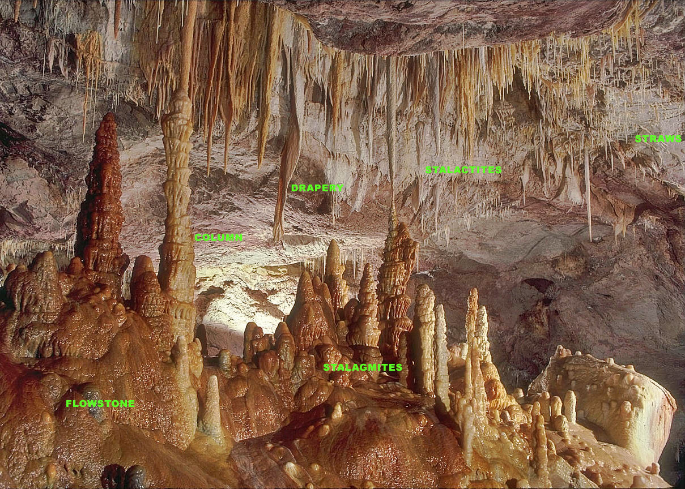
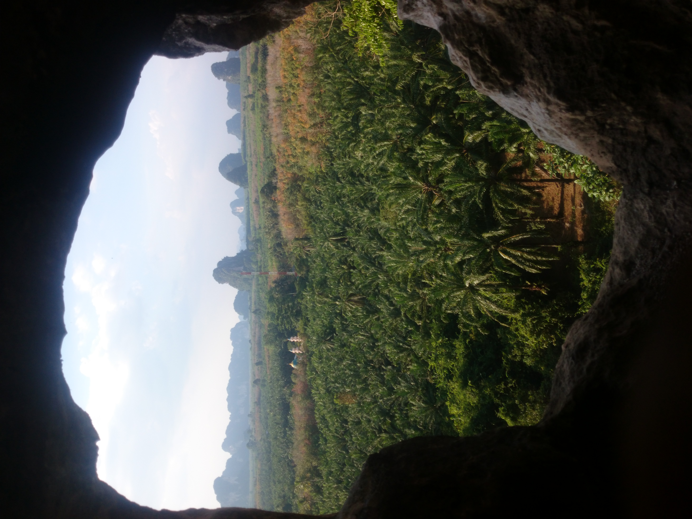
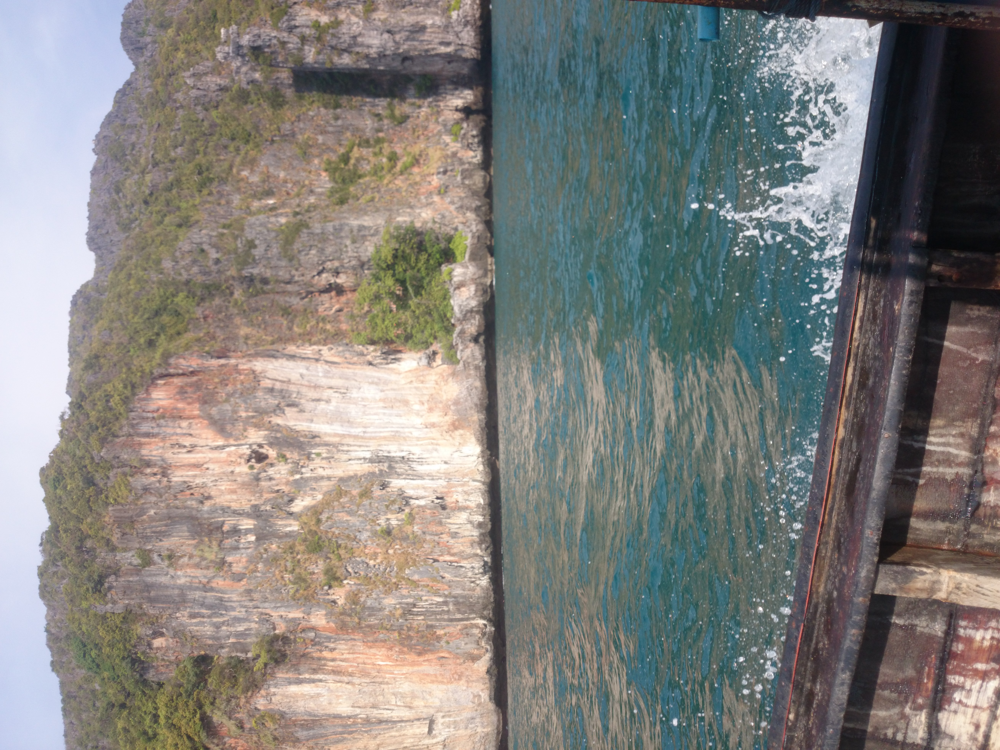

Fishing for a paleoclimate key in karst plumbing
- Speaker: George Kontsevich / 康笑愚
- Date: March 30th, 2021
Preface

Preface
- Rain water percolates into the soil
- Soil CO2 diffuses and forms carbonic acid
- H2O + CO2 ⇔ H2CO3 ⇔ CO32- + H+
- CaCO3 + 2H+ ⇒ Ca2+ + H2O + CO2
- Liquid enters a void, CO2 degasses
- CaCO3 precipitates onto the surface
… Then used to interpret paleoclimate
Do we have a problem?
Other research..
Moerman, J. W., Cobb, K. M., Partin, J. W., Meckler, A. N., Carolin, S. A., Adkins, J. F., Lejau, S., Malang, J., Clark, B., and Tuen, A. A. (2014), Transformation of ENSO‐related rainwater to dripwater δ18O variability by vadose water mixing, Geophys. Res. Lett., 41, 7907– 7915, 10.1002/2014GL061696.
Other research..
Moerman, J. W., Cobb, K. M., Partin, J. W., Meckler, A. N., Carolin, S. A., Adkins, J. F., Lejau, S., Malang, J., Clark, B., and Tuen, A. A. (2014), Transformation of ENSO‐related rainwater to dripwater δ18O variability by vadose water mixing, Geophys. Res. Lett., 41, 7907– 7915, 10.1002/2014GL061696.
Karst
- Evaporites/Gypsum, Limestone, Dolomite, Marble ..
- Dolomite: MgCa(CO3)2 -
- Calcite/Aragonite: CaCO3
- Calcite: many forms, incorporates trace elements
- Aragonite: less stable, more compact, turns into calcite easily

Karst Zones: Soil
Soil
- Source of CO2
- Open System
- CO2 seeps out but slowly
- 40% Porosity
- PCO2 is variable ( ~ ΔT ~ water )
- Organic matter can travel down
- Retains some water..

Karst Zones: Epikarst
Epikarst
- Closed system .. probably
- CO2 supply is fixed
- 10-30% Porosity
- 3-10 meters in depth
- 90% dissolution happens in 1-2 meters
- then runs out of CO2 (below saturation)


Karst Zones: Transit Zone
Transit Zone
- less than 2% porosity
- flow is mainly through fissures
- matrix vs. preferential flow


Rain flowthrough
Karst acts as a "leaky basket" and contains a suspended aquifer
Secondary Aquifers
Non uniform dissolution creates multiple mini-aquifers due to:
- Surface geomorphology
- non-calcium-carbonate layers
- trace minerals
- kinetic breakthrough
This creates a strong bias towards heavy rain events
An annoying problem… or opportunity?
Possibility of extra dimensions
Geochemical challenges
Intermediary voids
- Detectable by measuring Mg/Ca and Sr/Ca
Varying concentrations:
- Should be detectable by measuring Hardness/Conductivity
Can we fingerprint aquifers?
Short term..
- Ca2+ concentrations
- Trace mineral concentrations
- chemical tracers
Longer term.. 13C (???)
- has been used to detect changes in vegitation
- different residence times -> "reservoir effect"
- relatively stable climate
- maybe .. compared to 14C to see if they covary or not